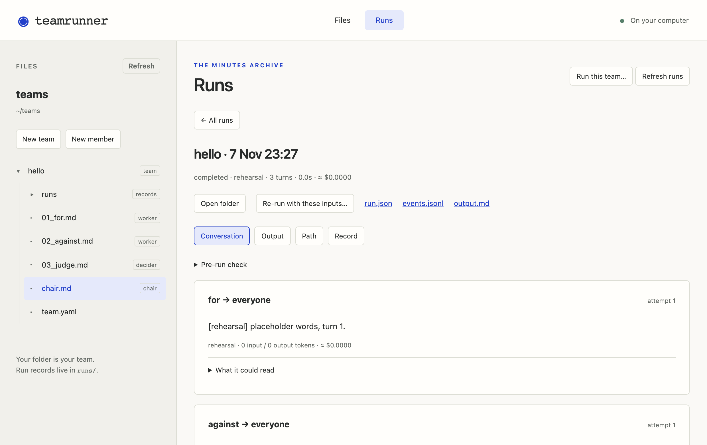

Step 1Build a team, and rehearse it for free
You will build a small debate from nothing: one agent for a topic, one against it, and a judge. We give you every agent's words to paste, and validation checks the files before a rehearsal. Every file in the team is one you made.
The first time, teamrunner ui asks once where to keep your workspace, then opens it from anywhere; new teams go in its teams/ folder. To open a particular folder instead, use teamrunner ui ..
Open a terminal in the folder where you want to keep your teams, and open TeamRunner's page. This is the one command you need:
teamrunner ui
A tab opens in your browser. Keep the terminal open while you work; Ctrl+C there closes the page. The interface runs on your computer and edits the folder it opened. Model calls, online checks and tools may contact external services.
Make a new team called hello: choose + Team, type hello, keep Empty team under Start from and choose Continue. The team's one file, team.yaml, opens in the editor.
Open a terminal in the folder where you want to keep your teams, and make a new, empty team called hello:
teamrunner new hello
Open hello/team.yaml in your text editor.
team.yaml says what the team is for. Fill in its description and add two settings. In this view, red is a line to remove and green a line to add; it is called a diff. Leave the id: line as it is: TeamRunner uses it to keep the team's history together.
default_model: is the model every agent uses; you'll need it in Step 2. default_inputs: gives the team its topic, until you give it another.
Save (Ctrl+S, or ⌘S on a Mac). Now the first agent: choose + Member, name it 01_for.md, and replace what is in it with these lines:
Save. Now the first agent: make a file hello/01_for.md with these lines:
---
description: Argues in favor of the topic
---
You are debating in favor of this topic:
{{topic}}
You speak once, first. Make your strongest case in one paragraph.
Each .md file in a team is one agent. Between the two --- lines are the agent's settings (its frontmatter). Below them are its instructions, in plain words. {{topic}} is filled in with the topic from team.yaml.
The second agent argues against. Make 02_against.md the same way:
---
description: Argues against the topic
---
You are debating against this topic:
{{topic}}
You speak once, after your opponent. Rebut their main point, then make
your strongest case against the topic, in one paragraph.
And the judge, 03_judge.md:
---
description: Decides who argued better
output:
winner: [for, against]
reasoning: ""
---
You have heard one speech from each side on:
{{topic}}
Decide which side argued better — judge argument quality and logical
clarity, not your own opinion of the topic. Announce the winner and
explain your decision in one paragraph.
The judge has one more setting, output:. It makes the judge answer in a fixed form: winner must be for or against, so you can count verdicts later. Step 5 says more.
That is the whole team: four text files you wrote. Now rehearse it: run all of it with no model. Each agent says placeholder words, and the judge's answer is picked at random. It costs nothing and needs no key, and it shows whether the team runs the way you meant.
Save, and look under Validation: if you mistyped something, it points at the line. Then choose Run…, keep Rehearse (free, no model) ticked, and choose Rehearse team. The conversation appears turn by turn, and stays under Run history afterwards:

Save, and check the team: validate --offline checks files without provider keys or network access and points at mistakes with their line numbers. Plain validate also checks keys and model availability.
teamrunner validate hello --offline
teamrunner run hello --rehearse
run · hello · default input topic: "Remote work makes teams more productive"
rehearsal · no model is called; the words are placeholders and the answers random
for 0.0s $0.0000
“[rehearsal] placeholder words, turn 1.”
against 0.0s $0.0000
“[rehearsal] placeholder words, turn 2.”
judge winner = for 0.0s $0.0000
“[rehearsal] placeholder words, turn 3.”
completed · 3 turns · 0.0s · ≈ $0.0000
hello/runs/2026-11-05_093012_helloThere is no file saying who speaks when, so each member takes one turn, in the order of their file names: 01_for, 02_against, 03_judge. The numbers set the order and are not part of the names.